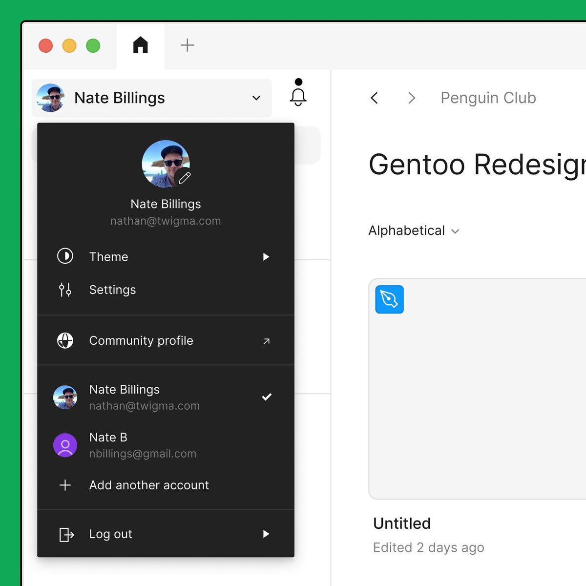
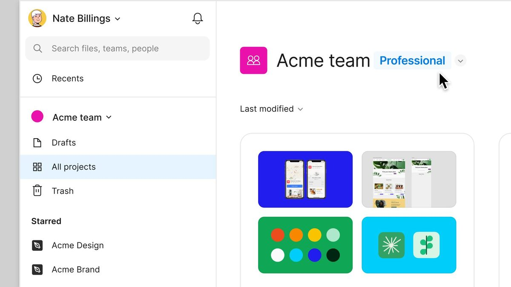
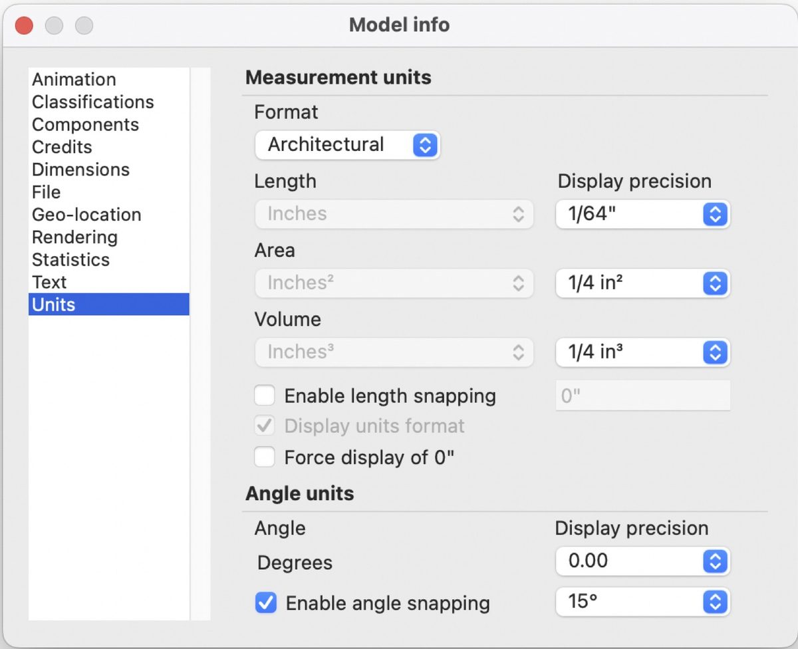
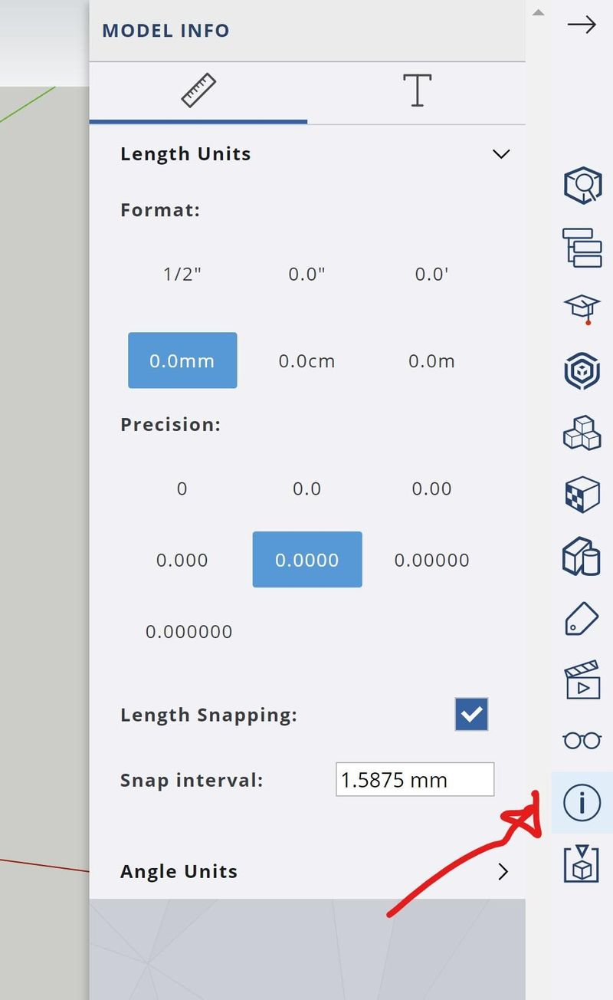
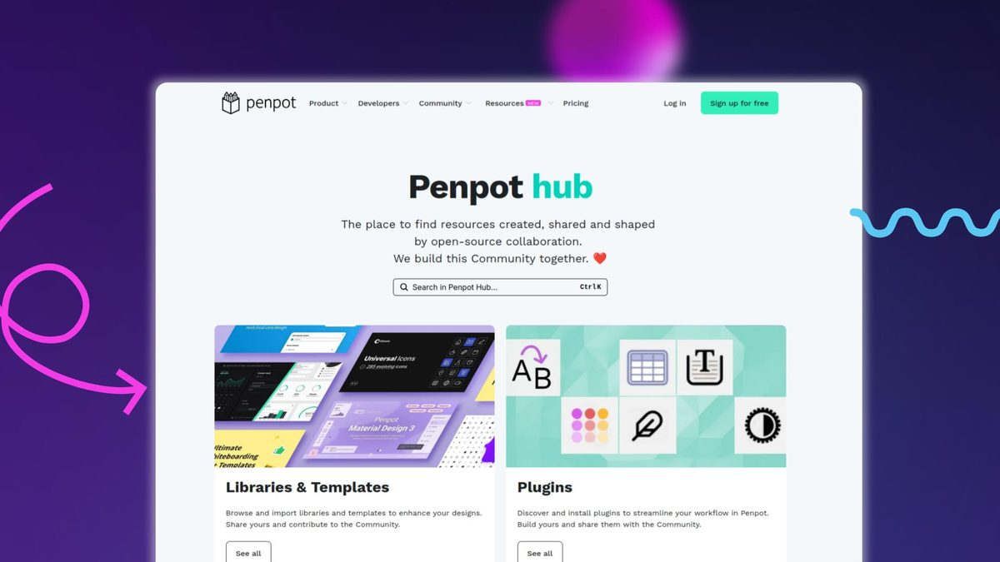
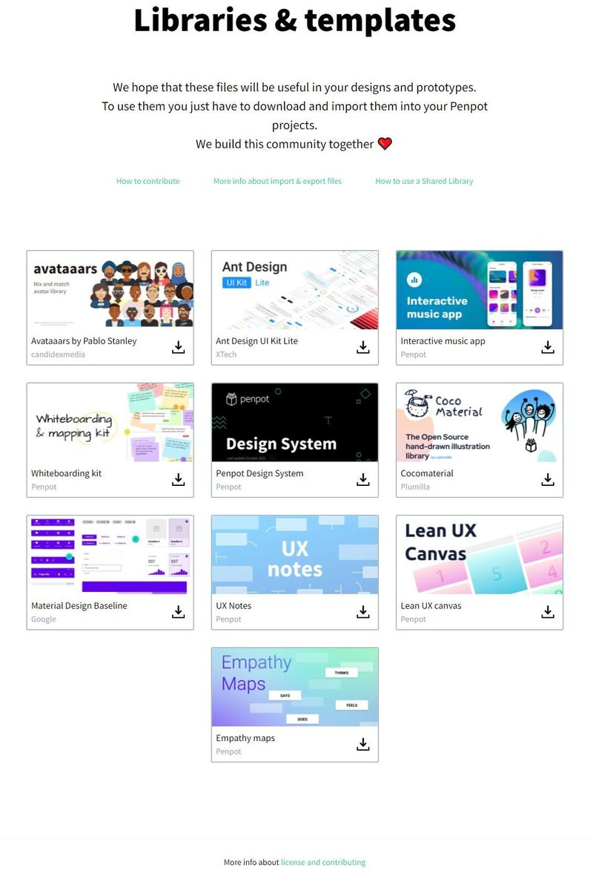

基线：origin/main（99e86ce）。本地分支 feat/continue-20261105 落后 main 235 个提交，草图按 main 现状绘制；工具栏尺寸钮、左轨齿轮、账户中心左栏均以 main 代码为准。
三处现状对应你给的三张截图；代码里目前不存在英制单位状态，尺寸数据内部一律按米存储。
齿轮 SettingsMenu 弹层：切回官网 / 新手指引 / GitHub。头像 CloudPanel 打开账户中心。
右栏为项目卡片墙。左栏目前没有「设置」入口，也没有「案例」入口；退出登录收在头像旁的三点里。
设置项在账户中心独立分区；左轨三点只保留外链与退出相关的轻量操作；标注开关与单位切换进设置分区。本期不做案例入口与案例墙。
场景数据仍按米存储，这里只切换画布标注与读数的显示单位；单位偏好随账号同步。
从右侧工具栏移入；网格吸附仍保留在工具栏，不在此重复。
不下沉账户中心；单位分段、标注开关直接挂在左轨三点弹层里，账户中心不另加入口。
| 事项 | 定稿口径 | 备注 / 理由 |
|---|---|---|
| 单位偏好存哪 | 跟随云端账号同步；内部场景数据仍存米，显示层按偏好换算，换设备登录继承同一偏好。 | 不存本机 localStorage；账号未登录时临时用本机默认值，登录后回写账号偏好。 |
| 英尺显示精度 | 默认英尺一位小数（如 12.0 m ≈ 39.4 ft），不拆 ft′ in″ 双单位。 | 场地尺度大，小数英尺读数简洁；后续需要可在设置里加精度分段（参照 SketchUp Web）。 |
| 换算覆盖范围 | 画布标注、属性面板读数、导出 CSV / 交付包均跟随单位偏好，可显示英制。 | 内部存储与工程底稿仍为米；导出文件按当前显示单位出数，附米制基准列。 |
| 工具栏撤除项 | 仅「尺寸标注」钮移入设置；网格吸附保留在工具栏，本期不收进设置。 | 选择、2D/3D、漫游、网格吸附、撤销重做、缩放、导出、氛围保持原位。 |
调研对象：设计工具 Figma、建模/场地工具 SketchUp，开源设计平台 Penpot。截图取自各产品公开界面，仅作信息架构对照；Penpot 两组模板画廊仅作后续参考，本期不落地案例墙。

账户浮层里单列 Settings，Theme 紧随其后；账号切换、退出登录与设置同层，画布工具条上不挂设置钮。对应我们把「设置」收进账户中心、左轨只留三点「更多」。

左栏按 Recents / Drafts / All projects / Trash / Starred 分区，Admin（管理设置）沉在列表底部。对应账户中心左栏「项目 / 物料 / 团队与权限 / 设置」并列成项。

单位是独立设置分区：左侧目录选 Units，右侧按长度 / 面积 / 体积分行，单位与显示精度各自下拉；英制走 feet+inches，公制走 mm/cm/m。内部建模基准不变，这里只改显示口径。

网页版把长度单位做成 mm / cm / m 分段按钮，精度另起一行分段；另有长度吸附、显示单位格式勾选。对应我们设置里「米 · m / 英尺 · ft」分段 + 换算示例，吸附开关可同组放置。

模板与组件库集中在独立 hub：顶部搜索，Libraries & Templates / Plugins 分区块，每块「See all」进详情墙。这是内容增长后的独立门户形态，本期不落地。

模板卡片 = 封面图 + 名称 + 作者/来源 + 下载/载入图标；规整三列网格，载入动作统一。仅作后续案例形态参考，本期不做案例墙。